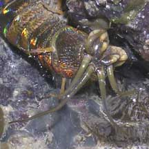
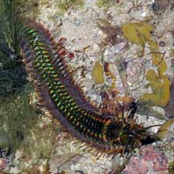
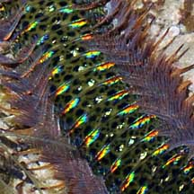
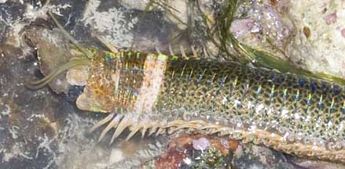
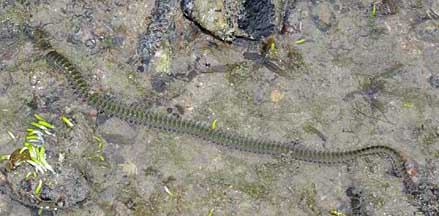
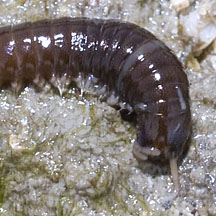
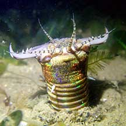
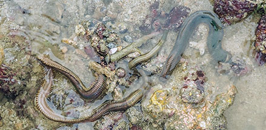

|
|
| worms text index | photo index |
|
worms > Phylum Annelida >
Class Polychaeta
|
| Giant
reef worm Eunice aphroditois* Family Eunicidae updated Jan 2020 Where seen? This magnificent worm can be commonly encountered on our Southern shores among living and dead corals. The first encounter with this enormous worm can be disconcerting, to put it mildly. It looks much like an impossibly huge and scary centipede! But it is shy and will hide at the slightest sign of danger, and is more active at night. What are giant reef worms? They are segmented worms belonging to the Family Eunicidae, Class Polychaeta, Phylum Annelida. The polychaetes include bristleworms, and Phylum Annelida includes the more familiar earthworm. Eunicid worms are commonly encountered on all our shores. They range from tiny ones only 1cm or shorter but include some of the longest polychaetes. Some members of Family Eunicidae can reach 6m with more than a thousand segments! These worms can live for several years. Most Eunicids are carnivorous. Some live in tubes, others may live in rocky habitats, burrow into coralline rock or limestone, or burrow into sand and mud. |
 A face that only a mother could love. |
 Sentosa, Sep 08 |
 |
| Features: The giant reef worm
can reach up to 1.5m. Indeed, such long ones are commonly encountered
on our shores. It has a white ring around the fourth body segment,
short pointed bristles on the sides of the body, and long tentacles
and other gruesome-looking appendages on its head. Although it does
have a face that only a mother could love, it is beautiful in some
ways: with glistening iridescent body segments. Young giant reef worms crawl about freely, but as they get older, they make a simple papery tube to live in. Giant reef worms live among living hard corals as well as coral rubble. |
 Grabbing a piece of Sargassum seaweed. St John's Island, Feb 11 |
 Snatching a mouthful of seaweed. Sisters Island, Apr 04 |
|
| What does it eat? It appears to
eat seaweed. It creeps cautiously out of its hiding place then quickly
snatches a mouthful before retracting back instantly. Among the seaweeds
we have observed being gathered by the worm include: Hairy
green seaweed (Bryopsis sp.) and Sargassum
seaweed (Sargassum sp.). Although it seems to have ferocious
jaws, these are probably used more to ensure a good grip on the food
item. They have not been observed eating animals. But it is listed among the dangerous animals on our shores as it can give a nasty bite. So do leave the worm alone. |
|
 Pulau Tekukor, Jan 10 |
 A young worm? Sisters Island, Jan 12 |
|
 Changi Loyang, May 21 Photo shared by Jianlin Liu on facebook. |
 Terumbu Selegie, May 24 Photo shared by Vincent Choo on facebook. |
 |
*Tentative identification. Species are difficult to positively identify without close examination.
On this website, they are grouped by external features for convenience of display.
| Giant reef worms on Singapore shores |
On wildsingapore
flickr
|
| Other sightings on Singapore shores |
| Acknowledgement With grateful thanks to Leslie H. Harris of the Natural History Museum of Los Angeles County for comments about these worms. Links
|